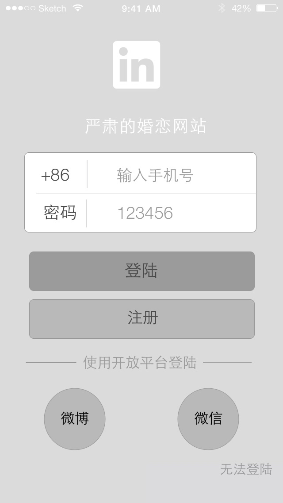
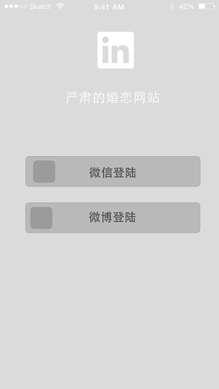
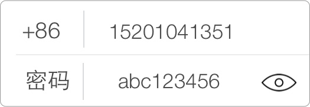

登陆和注册设计
2015/10/22
没有必要进行密码确认。 由于手机是私人设备，直接输入密码时由于身体的阻挡不容易被人偷窥到密码。所以可以不必设置为*状的密码模式。 点击右侧的眼睛图标即可查看密码的明文。 不用记住密码。如果token失效，用户重新登陆。 手机上没有验证码的必要。因为手机注册会通过短信进行确认。服务器端可以通过一定的规则对机器人登陆进行判断。 最方便的登陆模式就是不用登陆。 我刚从Appstore下载本软件一个软件，应该如何做? 要同时满足安全性和方便些的需求，我认为直接开放平台账号登陆是最优的解决方法。除非非常有必要否则不增加手机号注册/登陆的功能   随着新的生物鉴别技术的发展，以后 也许有一天，所有的产品的在账号认证方面方面能更加自然，更加方便且有更加安全。1.延后注册登陆时机
2. 安全性
是否需要密码确认?
密码是否以密码模式展现
由于手机上输入文字不方便，防止密码输入出错。所以可以把显示密码。
是否需要记住密码?
手机/用户名/邮箱注册？
验证码
3. 方便性
1. 注册过程中，如果输入了已经注册的账号，则自动提示用户找回密码4.登陆
5.解决方案
方案
原因
开放平台账号登陆
1. 快捷 - 直接登录，不用输入账号密码 2. 安全 - 不用考虑找回密码的问题 - 不用考虑盗号问题
6. 刷脸登陆—新技术的发展
新技术
使用App
人脸识别
QQ安全
指纹识别
iphone touchID
瞳孔识别
xxx